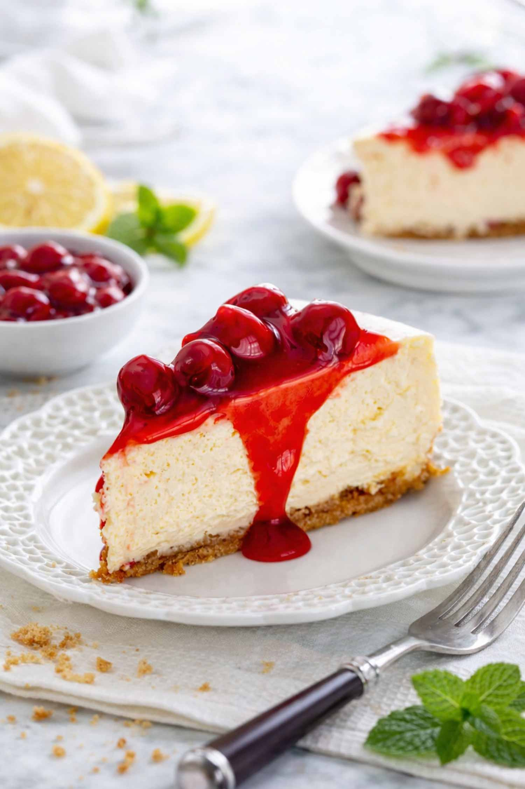

Cheesecake Recipe

Description:
Cheesecake is a sweet treat that is more pie than it is cake. It is sweet and creamy and especially delicious when topped with cherries.
Ingredients:
- 1 1/4 cups of graham cracker crumbs
- 1/3 cup of butter
- 8 ounces of cream cheese
- 1/4 cup of sugar
- 14 ounces of sweetened condensed milk
- 1/4 cup of lemon juice
- 8 ounces of sour cream
- 3 large eggs
- 21 ounces of cherry pie filling (optional)
Steps
- Gather all ingredients.
- Preheat oven to 300 degrees F.
- Combine graham cracker crumbs, butter, and sugar in a large bowl; mix well.
- Press mixture firmly onto the bottom of a 9-inch springform pan.
- Beat cream cheese in a large bowl wiht an electric mixer on medium speed until fluffy.
- Gradually beat in condensed milk until smooth.
- Add eggs and lemon juice; mix well. Pour into the prepared pan.
- Bake in the preheated oven until center is set, 50 to 55 minutes.
- Remove cheesecake from the oven; top with sour cream.
- Continue baking until sour cream sets, about 5 minutes.
- Cool cheesecake at room temperature for 1 hour, then chill in the refrigerator for at least 4 hours.
Garnish with pie filling before serving. Store leftovers covered in the refrigerator.
Home